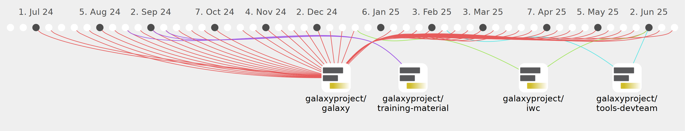

ahmedhamidawan

Commits all-time: 910
Commits last year: 473

(462)
- 4f5f8de
- a6e7081
- 9727b88
- 077832b
- 839fd0c
- 6e9a7fc
- c2a10b4
- 5f07fbc
- 7b29122
- 95b7090
- 3e0e9dc
- 3a69575
- f5cc111
- 9de0ee2
- 3de5686
- b877fa3
- 53ace3c
- d31d0fc
- 8028bd7
- 964e6e1
- 6a4b3b5
- 7d8a28c
- 76cbfbe
- 3f8c354
- 8856b83
- a2ea780
- 58f0936
- b1439a9
- a9ca069
- 2d245ec
- f1b0a74
- 6b764b8
- ac7428e
- e12e7c4
- 15e34e5
- 64f4e86
- 455e0b8
- 303577c
- f4c1745
- 29a023d
- 4b9116b
- a3156c0
- 1196d2a
- d60a298
- 957723d
- d7afcb0
- 161ee58
- 40fd7e3
- 0c3e7e3
- 50ac08c
- 91e7ce2
- 43f3b8f
- c742333
- 5452c14
- 987bbf9
- c8534bc
- 83ec705
- 992319a
- d5228a5
- d451c8d
- a5da8ac
- b057b4c
- 9c4b3bc
- 408366d
- d44f037
- 4a8bf36
- 940b3c2
- f71af2f
- 9756a6a
- 6d90374
- 4b20276
- 8ded80d
- 0eaccd5
- f53170f
- 35ff19d
- 6a504c0
- 74234e0
- 33d97f1
- 7dda944
- 4f77d2e
- d805c99
- e0c49d6
- 6b057d7
- 552d135
- 6862f64
- 297a529
- 64e97bd
- 67f3105
- e844241
- 16c4eea
- 8a9d9ac
- b9f8f3c
- 3a827cc
- 3d6579b
- f518ef2
- 28596d3
- eb65bb8
- 1042d38
- 85b4746
- 3e30f27
- 2cae82c
- 09346e6
- b2625b3
- 0463441
- 6cff8d6
- 8f6c955
- 6364764
- b8dbc52
- d6a5f99
- 8947533
- 632955a
- fa9aa73
- baa3e55
- 9f1522b
- 0c50efc
- 32c8c7c
- 3bd965b
- 377c5cf
- aca94f4
- 1e0cdab
- 60a5fb7
- fa572ad
- 99447d6
- c2ab795
- 283c7fd
- 35bb5ff
- 6dd5f7c
- 76fbe94
- dd653ee
- f74204e
- 72b590a
- 07fb4c1
- 5a17e0c
- b04aa3a
- 29796d4
- 03527bd
- 56ccef4
- b9adc1b
- e09a364
- 9deac09
- 68efe8d
- 274da12
- 1415920
- 24ba9c2
- 98236e1
- 5dbf3b0
- ef82f8f
- 82b410a
- f5cb35c
- 69ae867
- 53c8fb5
- 22179d2
- ae0ff75
- 1c9e972
- a24486a
- ea0308c
- c554490
- 73ce5b8
- 8796f3f
- 9260b81
- 8838d2c
- 2c5dcb9
- 4532464
- 67f47bf
- 9d2b25c
- eade161
- 404e54e
- 6d0bff4
- d658d1d
- 89baf0b
- a731902
- 7229e55
- 0d7d521
- b8f2e34
- 2f034a5
- 871939d
- e055d8a
- 1cfe050
- 155e976
- 5ebece7
- 04aa4ff
- 0c75282
- 0b262c0
- 3baafc2
- dbba30d
- d832e81
- 5dd3eba
- d9fe6cd
- ba71756
- 49649d6
- cf11603
- 6c72874
- 3f7341e
- 782f6cb
- 1484dcc
- 03d5384
- 99f3f20
- 1f9b2f7
- 93a4302
- 6354e6a
- 2e94ade
- 85252a9
- 7b10bfa
- 514288d
- 9ff5668
- 97550e1
- d7ab6c6
- 5fc8507
- 3ff6e96
- d112817
- ecbacaf
- 6b8f518
- f61dbf7
- fa9422b
- 4ffc3b1
- 9e19635
- b47dd43
- 47eb5e8
- b8565cd
- 2556822
- c749404
- 7f4bb45
- 3bde4d7
- 476200b
- df2a5d6
- 0fd7a70
- db1a13e
- 36f4609
- f0ace7c
- 7675eed
- b29a3f3
- e33fe02
- b36d2cb
- 2f5aef6
- 767ca6a
- ff866da
- 4a09278
- e4c3590
- ff98edd
- 58114b6
- e712b06
- 0cd205d
- 3f676cf
- 1c7fffb
- 4a6bbfc
- e29dc72
- 9794f50
- 7f7eed2
- 6d31292
- 59cea34
- adb0df0
- ddea44e
- b205290
- 2c5100e
- 3cb00da
- c8aaa26
- f19ae6d
- bd6e8f8
- 07e0efe
- 1b01f86
- 7067045
- 74b78ec
- e14bf79
- df5faa3
- a3685ed
- 49ece6d
- c1e4217
- f934998
- 8ff5105
- 880910d
- 606edea
- 95b8f2c
- 5153017
- d2cfca5
- d8a4d17
- f5393a2
- 402410c
- 6313698
- d37a480
- cfa822a
- 208bf40
- 5158cf3
- 8298eff
- 73e6872
- 8767b93
- 1e609bf
- c9450c1
- c87c782
- f88bf02
- 9166597
- 937c848
- 165cff9
- df2ff29
- 2b29c66
- 0f0b8fe
- add040e
- 09526e4
- b2e2090
- e7fe2f0
- b0a448a
- c0762f7
- 6d31241
- 7bb4d8d
- 449dcf5
- 820e38c
- 42abf28
- 7fbba6f
- 73754e8
- 9453587
- 4c1609e
- ad41574
- 7ca7423
- 7057ff2
- 9f8d0ab
- e25e03a
- b7bf8bd
- 5c46fa2
- 05fbe9d
- dcae714
- b80f418
- 3292167
- 98fc487
- 9481569
- 03205a1
- fd6f54e
- d556ebf
- 5a62c68
- ae7ec2e
- 6cec23d
- 4672096
- e2af549
- 6a967f8
- 6b5aa6b
- 177ad12
- 179f0b6
- 3534cae
- f0fa975
- 131093f
- b13f297
- 00aa61c
- 3dca5d9
- a2dc148
- 642ad39
- ba43210
- 97a6cee
- 9fc761f
- f4ad106
- 5b04e4d
- 30b9deb
- 6dd0a5d
- d3dc05b
- 2331abd
- dca61f4
- e8b60e1
- c814643
- 3735586
- 0133f6e
- 8a0b56c
- 21f9553
- 4c4498c
- 8835ffe
- df3b5be
- ecfa54d
- 64a7c97
- 939b8da
- a7d0c52
- 6f28bee
- a340572
- 1582818
- 31debc4
- e181360
- e954139
- 5ea99f6
- f3c2574
- d05ab81
- 11f9a07
- 55981f3
- 1148d8d
- 63b552f
- 3a195ea
- 1caa71a
- 9f5addd
- 1e8211d
- 6dde451
- 5c1478e
- 7094336
- 32baa4c
- 8e8a9b3
- 05a2761
- 2e46bb1
- ecaacc4
- dad2f83
- a84f12b
- 5c15f5c
- 4c34f0b
- 4af16c3
- 9394f66
- e553dc6
- 700cb95
- 9c7fa0d
- fc7f8bd
- bb25979
- 7297f7d
- f4f7282
- f96da03
- 69b2c35
- 5533a5e
- d7fa1d1
- 9cd6eb6
- bd8da5e
- f4f1c33
- a02a297
- 515e21f
- 1913be6
- f0ebb7b
- f4d15de
- f13c873
- 7073e26
- 109b786
- 6355832
- 47435ce
- 07b4186
- 54fa5ae
- db80c5c
- 4d1da5a
- 669e4d5
- 9155814
- e0567af
- 48f7c88
- ceaf544
- df6488e
- 7e9cf09
- c154047
- 11d4a91
- 4084e75
- 909b8d9
- db234a2
- bdb866f
- f4b0e3e
- da90d18
- 943923c
- 7eafbd3
- 7398160
- fd6bc9a
- 8fba212
- 4432dc0
- 959da11
- 2fbfdd7
- d9ae5e1
- 857b999
- d096f53
- c2974fe
- c645eda
- 5856100
- 04602c3
- dfd897b
- e067f0e
- 5df4a4d
- db86596
- 795d360
- 193affd
- 7f7aaba
(5)
(4)
(2)